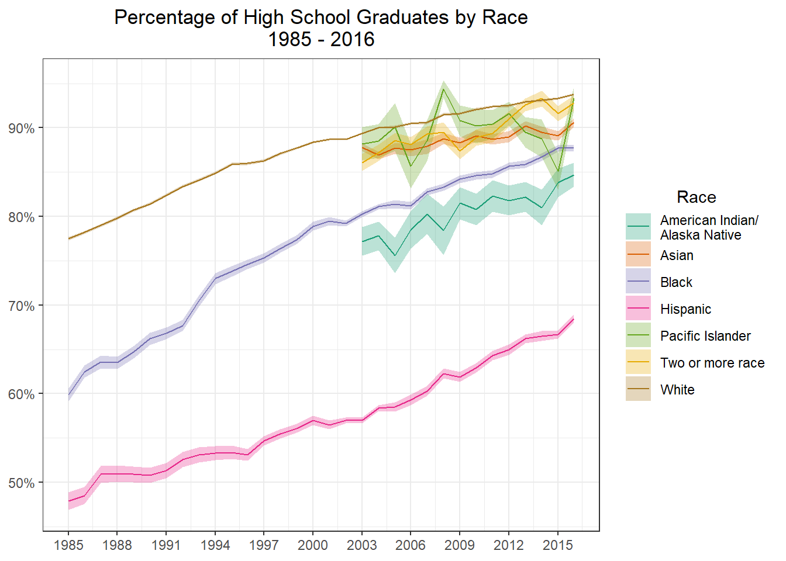
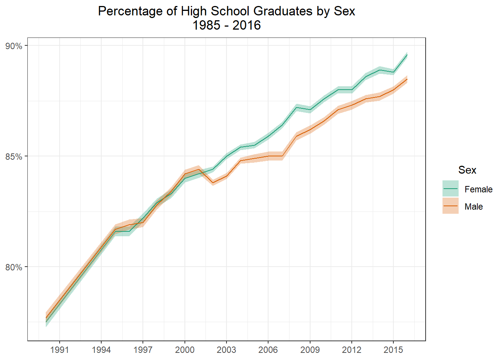
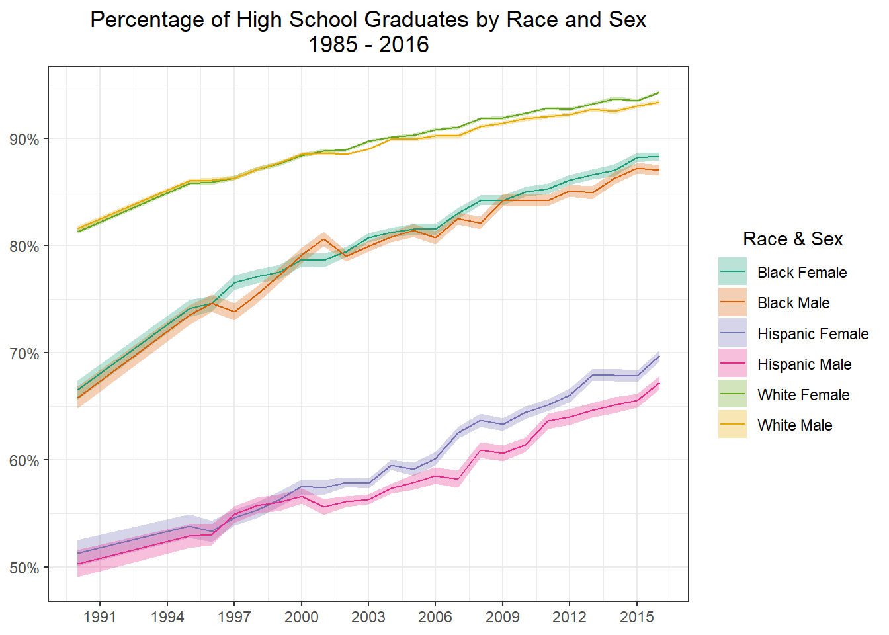

Recently I was struggling to find a data project to work on, I felt a bit stuck with some of my current projects, so I begun to scour the internet to find something to work on. I stumbled upon (TidyTuesday)[https://github.com/rfordatascience/tidytuesday] a weekly project where untidy data is posted from various sources, for the goal of practicing cleaning and visualizing. There is not right or wrong answers for TidyTuesday, this was exactly what I was looking for! This week (well by the time this was posted, a few weeks ago) the data set was about Historically Black Colleges and Universities. Within the posted data there were a few different data sets, I chose to work with the set dealing with High school Graduation rates, throughout this post I will explain my steps for cleaning and then present a few different graphs. It should also be noted that in the first section my code blocks will build upon themselves, so the same code will be duplicated as I add more steps to it.
Load Data
In this first block we will load some required libraries as well as load in the raw data. This dataset contains data for Highschool graduation rates by race. One thing to point out here is the use of import::from(), will its use here is a bit overkill, it was more for my practice. In this case I am importing the function %nin from the Hmisc package, which in the opposite of the function %in% from base R.
Rows: 48
Columns: 19
$ Total <dbl> 1910…
$ `Total, percent of all persons age 25 and over` <dbl> 13.5…
$ `Standard Errors - Total, percent of all persons age 25 and over` <chr> "(—)…
$ White1 <chr> "—",…
$ `Standard Errors - White1` <chr> "(†)…
$ Black1 <chr> "—",…
$ `Standard Errors - Black1` <chr> "(†)…
$ Hispanic <chr> "—",…
$ `Standard Errors - Hispanic` <chr> "(†)…
$ `Total - Asian/Pacific Islander` <chr> "—",…
$ `Standard Errors - Total - Asian/Pacific Islander` <chr> "(†)…
$ `Asian/Pacific Islander - Asian` <chr> "—",…
$ `Standard Errors - Asian/Pacific Islander - Asian` <chr> "(†)…
$ `Asian/Pacific Islander - Pacific Islander` <chr> "—",…
$ `Standard Errors - Asian/Pacific Islander - Pacific Islander` <chr> "(†)…
$ `American Indian/\r\nAlaska Native` <chr> "—",…
$ `Standard Errors - American Indian/\r\nAlaska Native` <chr> "(†)…
$ `Two or more race` <chr> "—",…
$ `Standard Errors - Two or more race` <chr> "(†)…
Now we are going to start cleaning the data. First I am going to filter for years 1985 and up, prior to this year the data set is a bit spardic, so to keep it clean I am only going to look at 1985 and up. There are also 3 odd years (19103,19203,19303) that I am not sure what those are so I will remove that data as well.
Next I am going to convert all columns to be numeric, because of some blanks in the original import all of the columns read in as characters instead of numeric.
Next I am going to rename the columns. First I rename the column Total, into year, as this column holds the year! Then I use stringr::str_remove_all to remove the long phrase ‘percent of all persons age 25 and over’, as well as the number 1. For some reason the Black and White columns each have a number 1 at the end, I think this is for some sort of footnote but we will just remove it.
hs_students <- hs_students_raw %>%filter(Total >=1985) %>%filter(Total %nin%c(19103, 19203, 19303)) %>%mutate(across(everything(), as.numeric)) %>%rename(year = Total) %>%rename_with(~stringr::str_remove_all( . ,", percent of all persons age 25 and over|1" ) )
Then I am going to drop the column ‘Total - Asian/Pacific Islander’, each of these races is stored in a seperate column so if I needed the total later for some reason I could calculate it. I am also going to drop the string “Asian/Pacific Islander -”, from the begin of each of those columns, so they will now tell me just which race each column refers too.
hs_students <- hs_students_raw %>%filter(Total >=1985) %>%filter(Total %nin%c(19103, 19203, 19303)) %>%mutate(across(everything(), as.numeric)) %>%rename(year = Total) %>%rename_with(~stringr::str_remove_all( . ,", percent of all persons age 25 and over|1" ) ) %>%select(-contains("Total - Asian/Pacific Islander")) %>%rename_with(~stringr::str_remove_all( . ,"Asian/Pacific Islander - " ) )
I now simply pivot the data longer. A nice trick I learned since I want to pivot everything expect the year column is to use the minus sign to select every column expect the year column in the pivot.
With the data now in long form I am going to separate the automatically generate name column into two columns titled, stat and race. The data contains both the percent that graduated and the standard error. Then I replace all the NA’s in the stat column with Total, as these are the total percentage and the other rows will be the standard error. Last I dropped the s from standard errors to make it singular.
It’s now time to graph. Notice the use scales::label_percent() as the labels value for the y axis. If the numbers were left as the default values (75 vs 0.75) the percentages would have been 750%, which is obviously very wrong! I also use geom_ribbon to draw the standard error bars around each line. Notice the use of color = NA, by default the ribbon has outlines, I did not like this so doing color = NA turns them off. (It should be noted there are a few other solutions to turning them off but this seemed the easiest to me). Last we see the use of the aesthetics argument in scale_color_brewer. By setting this we match the color and fill to be the same color, without setting this, the colors of the error bars and lines don’t match!
hs_students_wide <- hs_students_wide %>%mutate(ymax = total - standard_error ,ymin = total + standard_error )g1 <- hs_students_wide %>%filter(race !="Total") %>%ggplot(aes(x = year, y = total, group = race, color = race)) +geom_ribbon(aes(ymax = ymax, ymin = ymin, fill = race), alpha =0.3, color =NA) +geom_line() +scale_x_continuous(breaks =seq(1985,2016,3)) +scale_y_continuous(labels = scales::label_percent()) +scale_color_brewer(palette ="Dark2", aesthetics =c("color", "fill")) +theme_bw() +labs(x =NULL ,y =NULL ,title = glue::glue("Percentage of High School Graduates by Race" ,"\n" ,"1985 - 2016") ,color ="Race" ,fill ="Race" ) +theme(plot.title =element_text(hjust =0.5) ,legend.title =element_text(hjust =0.5) )g1

Load Male/Female Data
Now the file also contains the same information but split by male and female. I am going to load in that data.
Lets first graph the total for Male and Female graduation rates.
g2 <- male_female_hs_wide %>%filter(race =="Total") %>%ggplot(aes(x = year, y = total, group = sex, color = sex)) +geom_ribbon(aes(ymax = ymax, ymin = ymin, fill = sex), alpha =0.3, color =NA) +geom_line() +scale_x_continuous(breaks =seq(1985,2016,3)) +scale_y_continuous(labels = scales::label_percent()) +scale_color_brewer(palette ="Dark2", aesthetics =c("color", "fill")) +theme_bw() +labs(x =NULL ,y =NULL ,title = glue::glue("Percentage of High School Graduates by Sex" ,"\n" ,"1985 - 2016") ,color ="Sex" ,fill ="Sex" ) +theme(plot.title =element_text(hjust =0.5) ,legend.title =element_text(hjust =0.5) )g2

Now I am going to graph by Sex and Race.
race_filter <-c("White", "Black", "Hispanic")make_label <-function(label){# browser() result <- stringr::str_split(label, "\\.")unlist(lapply(result, function(x) paste(x[2],x[1])))}g2 <- male_female_hs_wide %>%filter(race %in% race_filter) %>%ggplot(aes(x = year, y = total, group =interaction(sex,race), color =interaction(sex,race))) +geom_ribbon(aes(ymax = ymax, ymin = ymin, fill =interaction(sex,race)), alpha =0.3, color =NA) +geom_line() +scale_x_continuous(breaks =seq(1985,2016,3)) +scale_y_continuous(labels = scales::label_percent()) +scale_color_brewer(palette ="Dark2", aesthetics =c("color", "fill"), labels = make_label) +theme_bw() +labs(x =NULL ,y =NULL ,title = glue::glue("Percentage of High School Graduates by Race and Sex" ,"\n" ,"1985 - 2016") ,color ="Race & Sex" ,fill ="Race & Sex" ) +theme(plot.title =element_text(hjust =0.5) ,legend.title =element_text(hjust =0.5) )g2

Conclusion
While I am sure there is much more that could be done with this data this is where I am going to stop for today. Our graphs clearly show a divide in graduation rates by race, however Sex does not seem to have much of an effect on graduation rates.